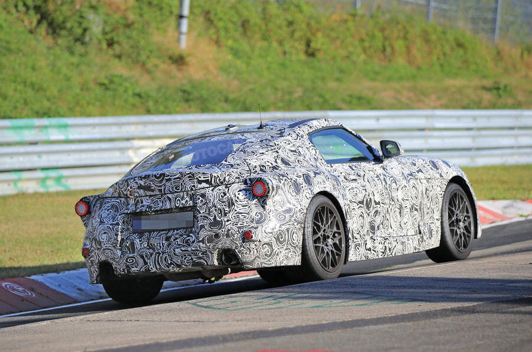
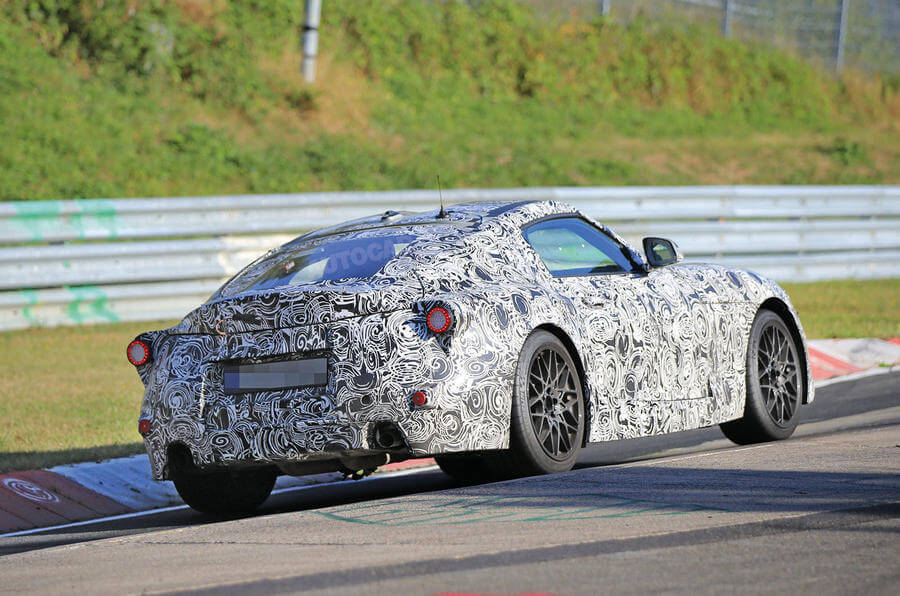

Adiós, BMW Z5
26 de Mayo 2017
El nuevo roadster de BMW no se llamará Z5, tal y como ha confirmado un ejecutivo de la marca. El BMW Z5 fue cazado con camuflaje mientras se sometía a una jornada de pruebas por una carretera nevada.
26 de Mayo 2017
El nuevo roadster de BMW no se llamará Z5, tal y como ha confirmado un ejecutivo de la marca. El BMW Z5 fue cazado con camuflaje mientras se sometía a una jornada de pruebas por una carretera nevada.